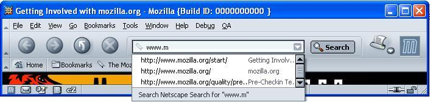
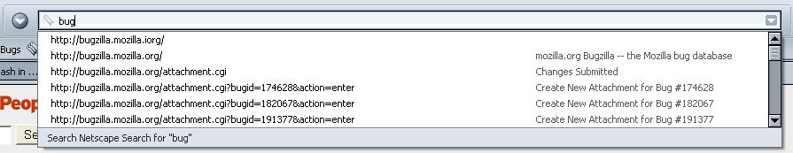

applying machine learning to autocomplete
Authors: Nisheeth Ranjan and
Andrew Ng
table of contents
- Introduction
- Project roadmap
- How can I contribute?
- Who is working on this?
- How about applying learning to other problems?
- I want more information
introduction
You have all used the autocomplete feature in the browser, right? For those who haven't, here's a picture:
I typed "www.m" in the url bar and Mozilla showed me a list of urls that match. In other words, Mozilla "autocompleted" the url for me. If the url I want is in the dropdown list, I can select it and avoid typing out the whole url manually.
Unfortunately, the autocomplete list is often totally useless. I frequently visit Bugzilla, but having typed in "bug", the autocomplete list looks like this:

This is not useful since I don't want to scroll through pages of urls to find the bug I am working on today. Moreover, even if I've visited the same bug 20 times today, it still appears way down in the list.
A more "intelligent" Mozilla would recognize what you are doing, and act to help you. In this project, we will use machine learning to make Mozilla more intelligent in sorting urls in the list. Sorting will happen based on a rank assigned to each url in the list. The goal will be to rank urls that are likely to be visited highest on the list. That way, when the urls are sorted by rank, they will show up on the top of the list and can be selected easily. Mozilla will continously improve its method of ranking urls as the user selects urls in autocomplete sessions. While our first application of url rankings will be to improve the usability of the autocomplete drop-down list, we also hope to use similar methods later on to improve web page prefetching and caching. More details on where we want to take this project in the future are described here.
To make this project successful, we need your help in collecting data for the first phase of this project (see step 1 in the roadmap below). All you need to do is switch on a preference, browse using the Mozilla 1.3 beta release, and submit a data file after approximately two weeks. More details on how you can help are given below.
project roadmap
1) Collect data. The more people that participate in collecting data the better. If you are tech-savvy and can help some non-technical people to run Mozilla, collect data, and submit it, that would also be a huge contribution to this project, since that would help make the data represent the browsing behavior of a broader set of users. More details on the specifics of how to collect data are given below.2) Once we have enough data, we'll use it to design and test different learning algorithms for predicting user browsing behavior.
3) Implement and deploy a prototype of the best learning algorithm.
4) If the response from the Mozilla community is supportive, replace the current url sorting algorithm with the better algorithm.
how can i contribute?
A) Data Collection
It's very easy. We'd like to recruit as many Mozilla users as possible to collect browsing and autocomplete data for this project. You will be in control throughout the data collection process. You will be able to toggle the data capture mode, see the generated data file, and decide whether to submit the data file back to us. We've also thought long and hard about privacy issues -- the data collection process is completely transparent and gives you options to safeguard your privacy at every step.Here are the detailed steps to participate in data collection:
- Download a Mozilla 1.3 beta or later build.
- (optional) Email us to
let us know you're participating. (This is optional, but will be helpful
to us for keeping track of roughly how many volunteers/users we'll have.)
- Type about:config in Mozilla's Location Bar to bring up a list of all your
preferences. Right-click on any of them (Cmd + Click if you're using a Mac) to
bring up the context menu and then select 'Integer' from the 'New' submenu.
Enter the following as the preference name:
browser.history.url.datacapture.mode
When asked for the value, enter2or1. Both settings will dump data into a file called url-data.txt in your profile directory (click here to find out where the profile directory is located on your platform). The different data capture modes are explained below. - Do your daily browsing using this build for approximately two weeks.
- Zip up the url-data.txt file in your profile directory
and use this
web page to submit the data file anonymously. In case you have
any problems zipping up or submitting the data, please email
us.
| Data capture mode |
Data file snippet |
Comments |
Complete data file sample |
| 0 |
No data file is generated |
Data capture is turned off when the mode
is set to 0 |
No data file is generated. |
| 1 |
<startup time='1042150244933000'/> |
With a data capture mode of 1, only numeric
information about urls is captured. So, we will not see the urls you browsed. |
Sample
without url information |
| 2 |
<startup time='1042150536511000'/> |
With a data capture mode of 2, the urls
you visit will also be captured. Since being able to see the urls
might inspire new ways and algorithms for url ranking, it would be somewhat
more helpful to the project if you set your mode to 2. But, capturing
data in either mode will be extremely helpful to us. Thanks! |
Sample
with url information |
B) Playing with the simple learning algorithm:
Along with collecting data, if you want to get a taste of how a learning enabled autocomplete might work, use "about:config" (see the 2nd bullet item above for more info) to add the following pref to Mozilla: user_pref("browser.urlbar.autocomplete.learning.mode", 2);
Setting this preference will enable a very simple learning algorithm
that will identify urls that you are likely to click on in the autocomplete
drop down list. After a few autocomplete sessions, urls identified
as likely click-candidates by the learning engine will show up with an
asterisk prefixed to the title of the url in the dropdown list. You'll
get a sense of what the engine thinks you will select from the autocomplete
list. This is an early prototype and is probably buggy, so tread
cautiously. When you turn on this preference, a file called ac-weights.txt
will be created in your profile directory and written to each time
you select a url from the autocomplete list. This file contains the
numeric weights used by the learning engine to classify urls.If setting the above preference causes any problems, just set the learning mode to 0 or remove the above line from the prefs.js file. Please report any problems by filing a bug in Bugzilla and assigning it to "nisheeth_mozilla@yahoo.com". If you'd rather shoot us an email about the problem, please feel free. Thanks!
who is working on this?
I am doing this work with a Computer Science professor at Stanford, Andrew Ng. He taught Stanford's Artificial Intelligence course last year and is teaching the Machine Learning course this year.If you want to volunteer your time in any way on this project, please email us. We'd love to work with you.
i can think of other places in mozilla that can use machine learning. why don't you work on those problems as well?
Yes! We are very excited about applying machine learning and artificial intelligence ideas to make Mozilla a more "intelligent" browser. We're currently considering a few other projects, but if you have ideas or suggestions, please feel free to email us. Your input is more than welcome!We started working on autocomplete as a first, concrete step towards applying machine learning to Mozilla because we think that the work we do here can be broadly applied. First, we anticipate that autocomplete usability improvements will be multiplied as they are applied in different contexts like email, instant messaging, etc. Second, we also hope to apply these ideas to improve prefetching and caching. Specifically, similar techniques should be applicable for ranking urls within a web page. We can then try to use those rankings to intelligently pre-fetch the urls that the user is most likely to click next while the user is reading the current page. We can also use the rankings to improve the cache eviction policy so that pages least likely to be viewed are removed from the cache first. Better prefetching and caching can lead to a huge performance win on slow, dialup connections and on fast, broadband connections (when the server is slow in sending data).